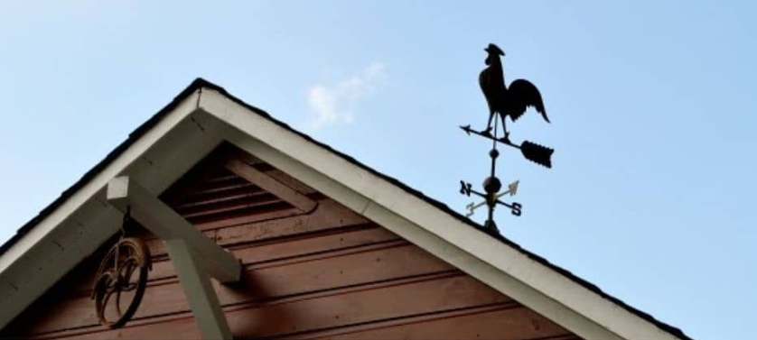
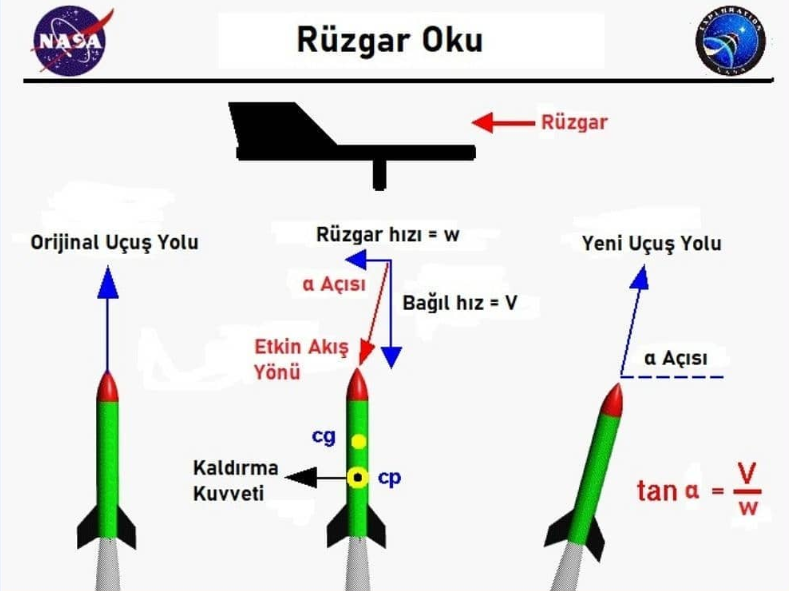
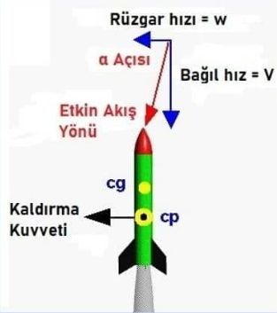
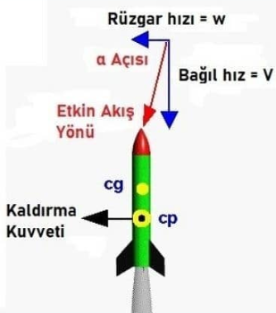
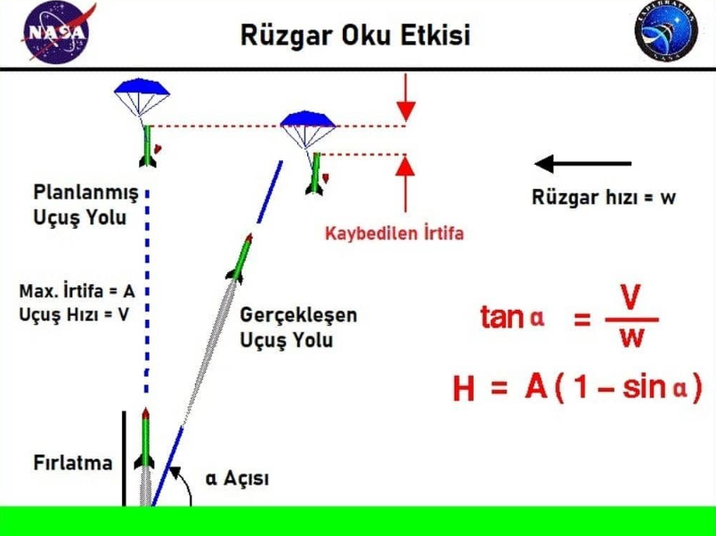

RÜZGAR OKU NEDİR?
Bir model roket (su roketi, hava basınçlı roket vs. de dahil olmak üzere) havalanmasının ardından genellikle rüzgara doğru yön değiştirir. Bu manevraya rüzgar oku adı verilir ve roket üzerindeki aerodinamik kuvvetlerden kaynaklanır. Büzgar oku kavramı, aşağıdaki şekilde siyah olarak verilen rüzgar gülünün hareketinden türetilmiştir.

Bir ahırın çatısında genellikle rüzgar gülü bulunur. Dikey bir çubuğun etrafında döner ve daima rüzgarın yönünü gösterir. Tabii bizim çoğunlukla filmlerde gördüğümüz rüzgar gülleri daha eski ve daha sanatsaldır. Bu tarz rüzgar güllerinde şekilde gösterilen kanat yerine dışa dönük kuyruk tüylerine sahip horoz figürü kullanılır.
Roket rampadan uzaklaştıkça, hızı ve üzerindeki aerodinamik kuvvetler artar. Aerodinamik kuvvetler -basitçe- roketin etrafında akan havanın hızının karesine bağlıdır. Eğer rüzgar olmasaydı, uçuş yolu yukarıdaki şekilde en soldaki gibi görünürdü. Bağıl hava hızı da (relative air velocity) dikey ve uçuş yolunun tersi yönünde olurdu. Eğer siz roketin üzerinde olsaydınız, hava sizi geçerek roketin arkasına doğru hareket edermiş gibi görünürdü.
Hız bilindiği üzere vektörel bir büyüklüktür. Haliyle bir nesnenin hızı, hem büyüklüğü hem de yönü olan bir vektör miktarıdır. Bundan dolayıdır ki biz hızları tartışırken hem büyüklüğü hem de yönü hesaba katmalıyız.
Rüzgar yandaki şekilde gösterildiği gibi uçuş yoluna dik, ek bir hız bileşeni sunar. Bu bileşenin eklenmesi, hava için -şekilde kırmızı ile gösterilen- etkin bir akış (effective flow) üretir. Bu etkin akışın yönü yatayla α açısı kadar eğimlidir. Buradaki α açısının boyutu, rüzgarın ve roketin hızının göreceli büyüklüğüne bağlıdır.


Etkin akış yönünün roket eksenine eğimli olmasından dolayı roketin gövdesi ve kanatçıklar tarafından aerodinamik bir kaldırma kuvveti üretilir. Bu kuvvet, roketin basınç merkezi (cp) boyunca hareket eder.
-Stabilite nedeniyle cp, cg'nin altında bulunur-
En sonunda kaldırma kuvveti, ağırlık merkezi (cg) etrafında roketin dönmesine neden olan bir tork üretir. Böylelikle rüzgar oku oluşmuş olur.
Roketin dönüşü, sağdaki şekilde de görüldüğü gibi, rüzgara doğru yeni bir uçuş yolu oluşturur. Yeni uçuş yolu etkin akış yönü ile hizalandığında artık yeni bir kaldırma kuvveti oluşmaz ve roket yeni uçuş yönünde uçmaya devam eder.
Uçuş yolu α açısıyla yataya eğimlidir. Bu açıyı roketin ortasını dikkate alarak belirleyebiliriz. Böylelikle; rüzgar hızını "w" ve uçuş hızını "V" olarak kabul edersek,
tan α = V/w ifadesine ulaşırız.
Buradaki tan ifadesi trigonometrideki tanjant fonksiyonunu belirtir.
Rüzgar oku etkisiyle planlanan (orijinal) uçuş yolu değişir ve yeni uçuş yolu dikeyden eğimli olduğu için; rüzgar oku, bir model roketin ulaşabileceği maksimum irtifayı azaltır. Birkaç trigonometri bilgisi ile bu kaybedilen irtifayı bulmamız mümkün.

Roketin çıkabileceği maksimum, dikey (planlanmış, orijinal uçuş yolu üzerinden) irtifaya A denilirse, kaybedilen irtifa (H);
H= A x (1-sinα) ile bulunur.
Buradaki sin ifadesi trigonometrideki sinüs fonksiyonunu belirtir.
Denklemimizi kontrol etmek için küçük bir yöntem deneyebiliriz; rüzgar hızı 0 olduğunda α açısı 90 derecedir ve kayıp irtifa sıfırdır. Yani denklemimiz doğrudur.
Kaynakça: